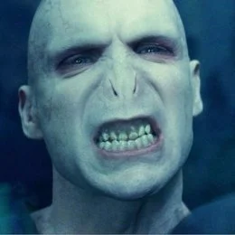
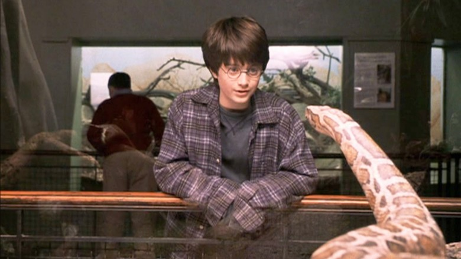
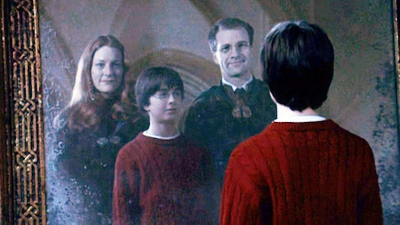
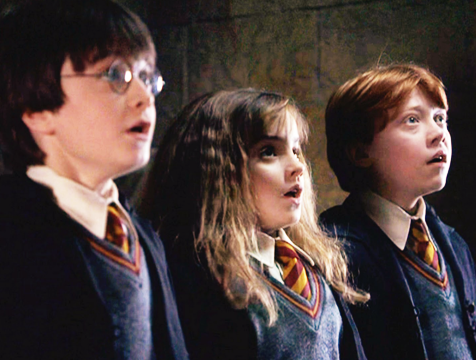
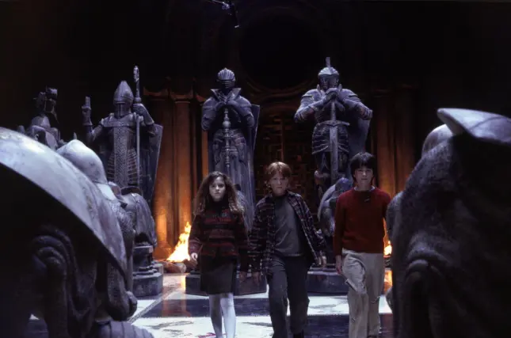

HARRY POTTER Y LA PIEDRA FILOSOFAL
¿Fantasia?¿Aventura?

¿Curiosidad?
¡La Magia Existe!
La Piedra Filosofal
La leyenda de la inmortalidad MISTERIO

Harry Potter Se ha quedado huérfano y vive en casa de sus abominables tíos y el insoportable primo Dudley. Harry se siente muy triste y solo, hasta que un buen día recibe una carta que cambiará su vida para siempre. En ella le comunican que ha sido aceptado como alumno en el Colegio Hogwarts de Magia. A partir de ese momento, la suerte de Harry da un giro espectacular. En esa escuela tan especial aprenderá encantamientos, trucos fabulosos y tácticas de defensa contra las malas artes. Se convertirá en campeón escolar de quidditch, especie de fútbol aéreo que se juega montado sobre escobas, y hará un puñado de buenos amigos, aunque también algunos temibles enemigos. Sin embargo conocerá los secretos que le permitirán cumplir su destino. Aunque no lo parezca a primera vista, Harry no es un chico común y corriente: ¡Es un verdadero mago!
¿Estas listo para vivir una aventura fantastica?
Ha llegado tu turno ¡ES HORA!

Sumergete ¡En una divinidad!
La única manera de obtener la piedra era mirarse en el espejo, verse a sí mismo poseyéndola, pero no utilizándola. La mayoría de las personas se ven utilizándola, transformando las cosas en oro, elaborando Elixir de la Vida, o dándosela a alguien. Esto fue lo que vio Quirrell. Quirrell le ordenó Harry mirarse en el espejo, Harry se concentró en la búsqueda de la piedra, y, como no le interesaba utilizarla, vio a su reflejo guardarse la piedra en el bolsillo, momento en el que la piedra apareció mágicamente en el bolsillo real.


HEDWIG
Simboliza la inteligencia, la paciencia y sabiduría.
ESCENAS RANDOM
-
 "SABEMOS SOBRE LA PIEDRA FILOSOFAL"
"SABEMOS SOBRE LA PIEDRA FILOSOFAL"
Luego de una ardua investigación Harry, Ron y Hermione visitan a Hagrid para decirle que saben que en el castillo están protegiendo la Piedra Filosofal, durante la charla nace Norberto, un dragón que un forastero le dio a Hagrid. Es aquí cuando los pequeños magos deciden tomar cartas en el asunto y proteger la Piedra Filosofal. -

LA HISTORIA DE VOLDEMORT
El pequeño mago se conecta con el personaje más temido del mundo mágico. -

HARRY HABLA CON UNA SERPIENTE EN EL ZOOLOGICO
Esta escena marca el comienzo de la vida mágica de Harry Potter, pues inconscientemente se da cuenta que tiene poderes que no son normales. -
 JAQUE MATE
JAQUE MATE
Esta escena marca un camino en la historia de Harry pues debe continuar solo para terminar su cometido, además demuestra que sin la ayuda de Hermione y Ron no lo hubiese podido lograr.
PERSONAJES
Saga Harry Potter Dumbledore Drako Malfoy Quirrell Neville Hermione Granger Sirius Black Severeus Ron Weasley Mc. Gonogal Oliver Voldemort Rubeus
MAGIC



SAGA
°Harry Potter Y La Camara Secreta
°Harry Potter Y El Prisionero De Azkaban
°Harry Potter Y El Prisionero De Azkaban
°Harry Potter Y El Caliz De Fuego
°Harry Potter Y La Orden Del Fenix
°Harry Potter Y Las Reliquias De La Muerte
Para Más Contenido
Ingresa tu correo para mantenerte al día sobre las aventuras mágicas y fantásticas de Harry Potter.